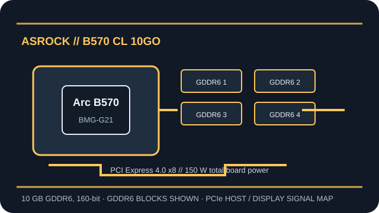

[ ASROCK // INDIVIDUAL BOARD RECORD ]
ASRock Intel Arc B570 Challenger 10GB OC
ASRock’s dual-fan Arc B570 Challenger board with 10 GB GDDR6 and a single 8-pin input. Launched 2025; based on Xe2-HPG (Battlemage), BMG-G21.

Recorded board specifications
| Exact board SKU | ASRock B570 CL 10GO — ASRock Intel Arc B570 Challenger 10GB OC |
|---|---|
| GPU / architecture | Arc B570; Xe2-HPG (Battlemage), BMG-G21; 18 Xe2-cores / 2,304 vector engines |
| Dedicated VRAM | 10 GB GDDR6, 160-bit |
| Host bus | PCI Express 4.0 x8 |
| Board power / connectors | 150 W total board power; 1 × 8-pin PCIe connector |
| Display outputs | 3 × DisplayPort 2.1; 1 × HDMI 2.1a; up to four simultaneous displays, subject to driver/display configuration. |
| Card dimensions | 249 × 132 × 41 mm (L × H × thickness); dual-slot |
| Cooling / physical design | Dual-fan Challenger cooler with metal backplate and 0 dB fan-stop |
| Driver / platform compatibility | Use Intel Arc graphics drivers for the installed OS and check the release notes for this GPU. Intel documents Windows 10/11 64-bit Arc driver packages; Linux support depends on the kernel, Mesa, distribution and release. Use UEFI firmware and enable Resizable BAR where supported; confirm slot clearance, link negotiation, PSU capacity and board power wiring against this exact SKU. |
Board-level power, connectors, port layout and dimensions above identify this maker’s card and should not be generalized to every card using the same Arc GPU. Confirm regional revisions and package/board changes from the maker’s current page before installation.
Architecture and compatibility notes
Arc B570 belongs to Intel’s Xe2-HPG Battlemage discrete graphics generation. The local GDDR6 configuration and PCIe link are part of the board record; actual negotiated PCIe speed and width are limited by the host slot, firmware and platform.
For a reliable deployment record, retain the exact board SKU, subsystem/device IDs, motherboard and firmware versions, driver package, operating system, PSU model and display connection path. Intel’s Resizable BAR guidance explains the platform prerequisites; it is a platform feature, not a board connector.
Sources & further reading
- ASRock — Intel Arc B570 Challenger 10GB OCBoard-maker product documentation for this named card; regional pages and revisions may differ.
- Intel ARK — Arc B-Series GraphicsIntel’s official GPU-family specifications and product references.
- Intel — Arc & Iris Xe Graphics Windows driverOfficial driver release and supported-product information; verify OS and driver branch.
- Intel Support — Resizable BAR on Intel Arc dedicated graphicsOfficial platform setup notes; host CPU, firmware and motherboard support are required.